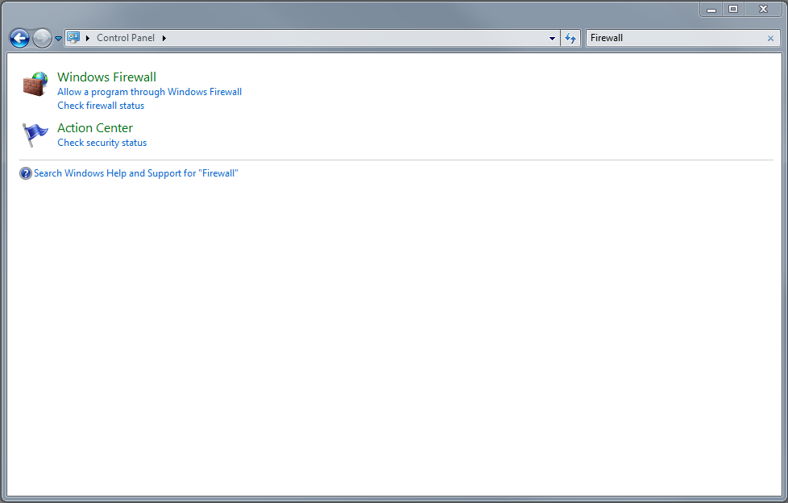
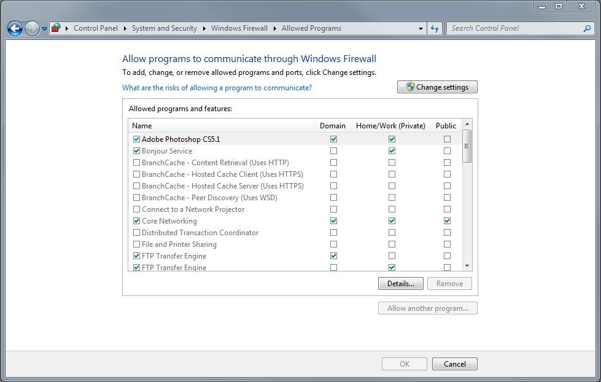
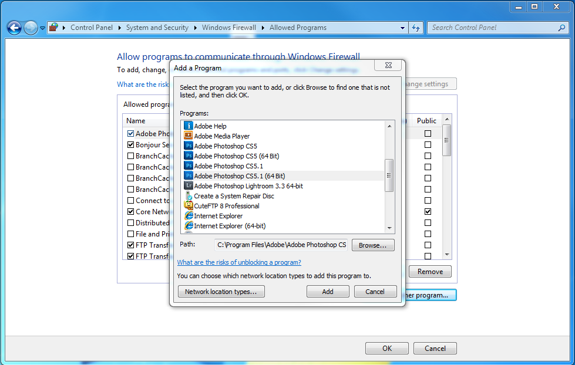

Windows Connection How-To
A typical user workflow would be something like this:
- Install Photoshop CS5.
- Enable Remote connections. Edit > Remote Connections…
- In the Remote Connections dialog, set Password and check Enable Remote Connections. Click OK.
- Windows will throw a dialog asking if it should allow Photoshop CS5 through the firewall.
- Click OK.
Windows 7 Dialog shown
If a user clicks No, they have basically just told the OS not to allow communication with remote apps. Even though everything looks OK, the OS will block any communication.
Steps to Resolve issue
- Windows Start Menu > Control Panel
- Go to Firewall Settings in Control Panel 
- Click on "Allow a program through Windows Firewall". This option is slightly different for each OS.
- If is listed in the list of programs simply. Click On check box to allow to communicate through Firewall. User may have to enter admin password to make change.

On Windows 7 they differentiate between Work, Home, Public networks. User will have to make their own choice there. I would recommend Work and Home to start. I do not envision too many people using thier apps in Starbucks but you never know. Just something to be aware of. - If is *NOT* listed in the list of programs.
- Click "Add Program"
- Choose from list of Programs. May require Admin Password. 
- OK all dialogs.
- Restart to be safe.
When all else fails
If all else fails and you still cannot connect to Photoshop, go back into the Windows Firewall Settings in Control Panel and remove all instances of .- Quit if it is running
- Windows Start Menu > Control Panel
- Get back into Firewall setting
- Click on "Allow a program through Windows Firewall"
- You may have to click on the "Change Settings" button
- Find and click on
- Click on the "Remove" button
- If you see more of them, please remove all of them.
- Launch
- When Windows pop the Firewall dialog, click "Allow Access"